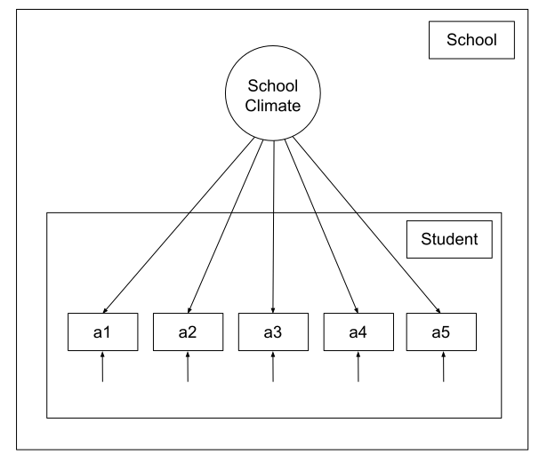
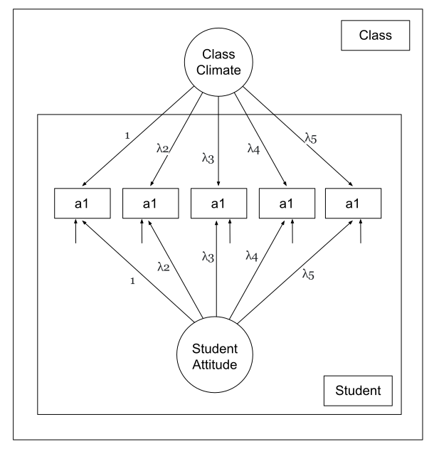
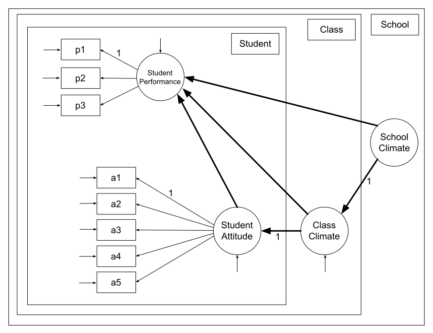
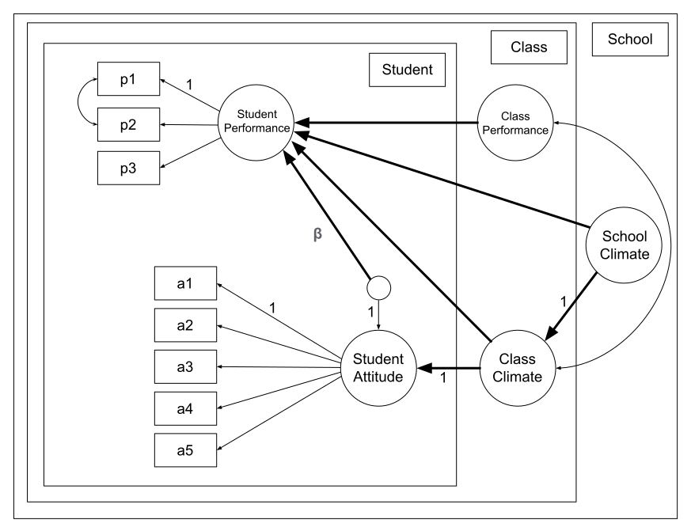

gmlSEM
1 Generalized Multi-Level SEM in R
This project aims at developing Generalized Multi-Level SEM in R. The main motivation was to develop SEM models for zero-inflated and zero-one-inflated beta responses (i.e. respones that take values on either [0,1], [0,1) or (0,1] intervals). The approach is based on maximum likelihood estimation and is in the line of the works of Muthén (2002) and Rabe-Hesketh, Skrondal, and Pickles (2004). Since introducing other distributions and families and their zero (or d)-inflated versions are straightforward and a complete framework for Generalized SEM in the #rstat is absent, we have implemented the codes to support the other distributions. In the case of the exponential family of distributions, gmlSEM supports models which can be run in gsem at stata software. Additionally, in confronting outlier data in our main motivation problem, we took advantage of Trimmed Likelihood (TL) Estimators as in Müller and Neykov (2003) and developed an algorithm to employ TL Estimators in multi-level settings which is available in the mlgSEM package.
gmlSEM uses a text-based interface to define the models. It uses a similar syntax to lavaan (Rosseel (2012)). Indeed, we have used some parts of the codes like the parser from lavaan and have extended the language. Thus, a user familiar with lavaan syntax can start developing the codes by learning the extended syntax.
The extended syntax helps you to:
Define levels (or clusters) in the data
Introduce (named) random terms in the model
Set the desired distributions for response models
2 Extended Syntax
Basically, the gmlSEM syntax for defining Generalized Multi-Level SEM is an extended version of lavaan syntax (Rosseel (2012)). So if you are not familiar with lavaan syntax, read the lavaan manual first and continue reading the gmlSEM extended syntax. Starting with the lavaan syntax, in gmlSEM extended syntax you have anything you used to have with lavaan syntax, except in the way we define level blocks, and few things listed and the end of this tutorial.
In a glimpse, the extended gmlSEM syntax helps you to define hierarchical structure of data using level: command for Multi-Level SEM. You can use family: command to define the family of distributions of response variables and also use copula functions to imply conditional dependency in a set of response variables varying at the same level. You can define random terms in the regression blocks and reuse them as response or covariate terms in other regression models. Using gmlSEM syntax, you can also fit semi-parameteric regression models by using s() terms in the regression block which add smooth terms to the regression model, like y=s(x). See ?gmlSEM::s to learn more. Additionally, gmlSEM syntax encompasses other features such as ellipsis and alias, so you can more easily work around the codes to develop your gmlSEM models. Though in gmlSEM, ellipsis is not a necessary part, it helps a lot to achieve a concise presentation of the model. Hence, we start with introducing this easy feature and other easy parts, and then will continue with the level and family blocks.
During this tutorial, we use gmlSEM::AttitudeDataset. It is a simulated data in which the attitude of students is recorded in variables a1,…,a5 and the performance of students in three major courses are recorded as p1, p2, p3. The subjects are clustered in classes within schools, and the school id and class id for each subject are specified in variables school and class.
2.1 Ellipsis
In gmlSEM, you can use ellipsis ... to avoid writing a long sequence of variables whenever it make sense. For example in gmlSEM syntax, y1,...,y5 is a shorthand for y1, y2, y3, y4, y5 and y1+...+y5 is a shorthand for y1+y2+y3+y4+y5. Using ellipsis make your code clear and easy to understand. You can also write more complex sequences like y1a+...+y5a which is the short version of y1a+y2a+y3a+y4a+y5a, and y1a,...,y1e which is the short version of y1a, y1b, y1c, y1d, y1e and y1a,y2b,...,y5e is the short version of y1a, y2b, y3c, y4d, y5e. In a gmlSEM model, ... simply will be replaced by the missing part of the sequence. The parser will understand the fixed parts and varying parts in sybmols, and generates the whole sequence by creating sequencies of numbers or alphabets with proper increments. Accordingly, you can use ellipsis to abridge any sequence whose template is easy to infer. If it helps, you can add the first two elements of the sequence to let the parser infer the increment size of the elements in the sequence. For example y2,y4,...,y10 is a shorthand for y2, y4, y6, y8, y10. Consider that y11,y12,...,y112 is a shrothand for a sequence of length 102. If you intend to write the sequence y11, y12, y13, y14, y15, y16, y17, y18, y19, y110, y111, y112 using ellipsis, you can write it as y1.1,...,y1.12. gmlSEM will drop dots from the name of variables and will look for new names in the data, if the original names can not be found in the data-set. Adding dots to the name of variables will help you to write more complex sequences using ellipsis. To ensure that the parser well understood your code, You can print the digested syntax with syntax(model,expand.ellipsis=TRUE).
In the case of using ellipsis in the gmlSEM syntax, you can use the same convention to name the parameters,
Example 1 (Labeling parameters using ellipsis)
model<-'at =~ lambda1*a1 + ... + lambda5*a5'In Example 1, a latent variable is defined by using five indicators a1, a2, a3, a4, a5 with their corresponding factor loadings lambda1, lambda2, lambda3, lambda4, lambda5.
2.2 Alias
Aliases are convenient for defining short and long version of variable and parameter names to have a concise code and clear outputs. It may happen that you would like to use the short version of a variable or parameter to have a more concise code, and you would like to print its full name in the outputs. To do this, you can define variable aliases with keyword as like
dp as depressionConsequently, you can use dp and depression interchangeably in the code, while by convenient the right hand side of as keyword is displayed in the outputs. You can use alias for any latent or observed variable or any parameter you define in the model. You can merge aliases into a single line to define aliases for a set of variables or parameters at once with the proviso that the length of sequences on the left and right hand sides are the same. Some examples are
p1,p2,p3 as MathScore,PhysicsScore,ChemistryScore
a1,..., a9 as StudentAttitude1,...,StudentAttitude9When you define aliases, you are free to use any character including space on the right hand side of as keyword. However, if you use special characters or strings such as space, ,, + or =~, then you can not use the alias on the right hand side in the family, regression or measurement blocks. The variable and parameter aliases can also be defined in the gmlSEM function by passing an alias argument to the function:
gmlSEM<-gmlSEM(..., alias=c("dp"="depression"))2.3 Random terms
In gmlSEM, you can use random terms in the regression models as you do it in lme4::lmer. In the following example, we use a random intercept to define a variance component factor model for attitude in gmlSEM::AttitudeData.
Example 2 (Variance-component factor model)
library(gmlSEM)
model<-'at as attitude
at =~ a1 + ... + a5
at = 0 + (1|class)'
gmlsem<-gmlSEM(model,AttitudeData)You can explicitly include or exclude intercept in the regression models by adding one of the values -1|0|1 to the model. By default, in gmlSEM, the regression models in which the response is a latent variable does not have an intercept while a regression model in which the response is an observed variable includes an intercept. Thus the ‘0’ in the regression model in previous example is redundant and is considered by default in gmlSEM.
You can assign name to a random term, so then you can use it as a response or covariate term in other regression models. In gmlSEM, you can use the name specifier operator [as .] to assign name to a random term in the regression model as in the following example. Notice that you can use name specifier operator [as .] only after random terms in the regression models.
Example 3 (Variance-component factor model)
|
In the figure in Example 3, latent variables serving as residuals are not enclosed in circles. In th gmlSEM syntax in this example, the name specifier operator [as .] is used to assign the name ‘c.c’ to the random intercept (the random intercept in this model can be interpreted as ‘class climate’). If you do not assign names to the random terms, gmlSEM automatically assigns names to the random terms by convention with the template response.level.covariate. For example in at = 0 + (1 + x |class), the gmlSEM assign names at.class.1 and at.class.x by convention to the random intercept and random slop terms, respectively.
Similar to lavaan, in the measurement and regression models, you can assign labels to the parameters of the model using pre-multiplication mechanism (using * operator). In a regression model, pre-multiplication mechanism assigns parameter labels to either regression coefficients or random terms’ standard deviation, depending it is a fixed term or a random term. Thus, in the following model, beta refers to the regression coefficient of the fixed term x, and c.c.std refers to the standard deviation of the random intercept term in the model.
library(gmlSEM)
model<-'at as Student Attitude
c.c as Class Climate
at =~ a1 + ... + a5
at = 0 + beta * x + (c.c.std * 1[as c.c]|class)'
gmlsem<-gmlSEM(model,AttitudeData)2.4 Level
In a Multi-Level SEM, it is assumed that the data has a multi-layer clustered structure. The observed and latent variables vary at different levels. In gmlSEM, you can use the level: command to specify the levels and nested levels and use the phrase vary at level or its variant varies at level to specify which latent or observed variable varies at which level, if necessary. In a Multi-Level model at gmlSEM, we use ‘elementary unit’ to refer the units at the lowest level. The data can be provided in gmlSEM with one or more data-frame. When the gmlSEM is provided by one data-frame, an elementary unit is simply a row in that data-frame. When multiple data-frames feed to gmlSEM, an elementary unit is a row in the data-frame representing data at the lowest level.
Consider the simulated dataset gmlSEM::AttitudeData. Students’ attitudes are recorded in variables a1,…,a5 and the performances of students in three major courses are recorded as p1, p2, p3. The subjects are clustered in classes and schools, and the school id and class id for each subject are specified in variables school and class. In gmlSEM, to define a Multi-Level factor model, we can use one or more level: blocks to specify the levels,
Example 4 (Factor model with two levels)
|
 |
In Example 4 a factor model with two levels is defined. The first level encompasses elementary units, and the second level is defined by variable school with level: school, and the latent variable s.c as ‘school climate’ varies at the second level.
Combining random effects in SEM make the models more flexible and easy to write and interpret in some scenarios. To see an example, we will rewrite an equivalent form of the variance-component factor model in Example 3 in terms of a two-level factor model. That is, to define two latent variables with the same factor model, one varies at the first level and the other one varies at the level class named ‘class climate’, with a constraint that factor loadings are equal in both factor models.
Example 5 (Variance-component factor model-hard syntax)
|
 |
In Example 5, a level is defined and a latent variable ‘c.c’ as ‘Class Climate’ which varies at this level. Two latent factors ‘attitude’ and ‘class climate’ are defined with a constraint that factor loadings are equal in both factor model, while attitude varies at the first level and ‘Class Climate’ varies at the level ‘class’. The two factor models could also be combined into a single line as:
c.c,at =~ lambda1*a1 + ... + lambda5*a5The model depicted at Figure 1 demonstrates a three-level SEM model with two measurement models defined at the first level. Two latent variables ‘Class Climate’ and ‘School Climate’ can be understood either as random intercepts at regression model for ‘Student Attitude’ or modeled by factorial models with the same structure as ‘Student Attitude’ with equality constraints for factor loadings as in Example 5.

Example 6 (Three-level SEM) The gmlSEM syntax for the model depicated at Figure 1 is:
librar(gmlSEM)
model<-'level: school
level: class within school
at as Student Attitude
s.c as School Climate
c.c as Class climate
p as Student Performance
c.c varies at level class
s.c varies at level school
p =~ p1 + p2 + p3
a =~ a1 + ... + a5
a ~ (1[as c.c]|class)
c.c ~ (1[as s.c]|school)
p ~ a + c.c + s.c'
gmlsem<-gmlSEM(model,AttitudeData)In Example 6, the second level is class nested within school as the third level. Both 2nd and 3rd levels and their nested structure are understood in the second line. Hence, the first line is redundant, and the model will remain unchanged if you omit the first line. For models with higher number of levels, you can use multiple within keyword in a single level: command to specify the nested structure of the levels.
In gmlSEM, you have to use vary at level phrase and explicitly list all latent variables and observed response variables that vary at the second level or higher. If for a latent variable or observed response variable the level is not specified, the gmlSEM will consider it to belong the first level. There is no need to list the latent variables and observed response variables varying at the first level, however you can do it by
y varies at level 1In a Multi-Level model in gmlSEM, you have to note that
In a regression model, the response variable must vary at the same level or a lower level than the covariates.
In a measurement model, the latent variable must vary at the same level or a higher level than the indicators.
You can use different names for labeling the levels other than the name of the variables specifying them in the data-set. If the variable’s name is different form the level’s name you can specify the variable’s name inside a parenthesis in front of the level’s name in the level: block e.g. level: class(ClassID). This simply make class and ClassID aliases. You can also give a name to the first level with level: BaseLevelName(1). A full example is:
level: Student(1) within Class(ClassID) within School(SchoolID)The order of lines in gmlSEM syntax does not matter. So Example 5 can rearranged for easy reading:
model<-'level: class
at as attitude
at =~ lambda1*a1 + ... + lambda5*a5
c.c as class climate
c.c varies at level class
c.c =~ lambda1*a1 + ... + lambda5*a5
lambda1==1'In factor models, you have to take care of identifiablity by putting necessary constraints on the factor loadings or the variance of latent variable. If you did not specify the necessary constraints, gmlSEM will set the first factor loading to one by default. You can either fix the variance to a constant value (e.g. 1) by
at ~~ 1*ator fix a factor loading by pre-multiplication mechanism like
at =~ a1 + 1*a2 + a3 + a4 + a52.5 Family
In gmlSEM, you can define the distribution of endogenous observed or latent variables in a family: command. In the following example, we define a factor model with zero-inflated beta distribution for indicators. You can use many other distributions in gmlSEM. See ?gmlSEM::family to learn more about different distributions that is provided in the package. You can also define your own distribution to use in gmlSEM.
In the following two examples you can see how we can use the family: block to fit a probit regression model and a factor model with zero-inflated beta indicators:
Example 7 (A probit regression model)
model<-'family: y binomial(link="probit")
y = x1 + x2'Example 8 (Factor model with zero-inflated beta indicators)
model<-'family: y1, y2, ..., y5 zoib(link=c("probit","logit"),type="[0,1]")
eta =~ y1 + ... + y5'2.5.1 Heteroskedasticity
If the chosen family distribution for an observed response variable or a latent variable encompasses a scale parameter, you can write a regression model in a heter: block to explain heteroskedasticity. In the next two examples we have defined an SEM in which the latent variable ‘Student Performance’ has a non-homogenous variance in different classes. In the first example the latent variable ‘Student Performance’ is a Gaussian variable which its variance is explained through a regression model over class using a default log link function. In the second example the latent variable is assumed to have gamma distribution. If the chosen family does not have a scale parameter the gmlSEM will stop by raising an error. You can use different link functions for the mean and scale parameters in the regression blocks using link (or link.mean) and link.scale arguments. If you have no idea about the appropriate link functions you can ignore passing any argument into family distribution and rely on the default link functions. For the Gaussian and Gamma distributions the default link function for the scale parameter is log-link function. See ?gmlSEM::family to learn more.
Example 9 (Heteroskedasticity)
#Latent variable with Gaussian distribution
librar(gmlSEM)
model<-'level: class
at as Student Attitude
p as Student Performance
p =~ p1 + p2 + p3
a =~ a1 + ... + a5
p ~ a
heter: p ~ class'
gmlsem<-gmlSEM(model,AttitudeData)
#Latent variable with Gamma distribution.
librar(gmlSEM)
model<-'level: class
at as Student Attitude
p as Student Performance
family: p gamma(link.scale="log")
p =~ p1 + p2 + p3
a =~ a1 + ... + a5
p ~ a
heter: p ~ class'
gmlsem<-gmlSEM(model,AttitudeData)In the Example 9, the first line in both codes introduce a ‘level: class’ to the model, however in the code we have not introduced any variable that vary at the level ‘class’. The advantage of using the ’level: class’ is to say to the gmlSEM that the variable class is a factor even if it is not of a type factor in the data.
2.5.2 Copula
When defining the family of distribution for a set of variables, you can also take advantage of copula functions to induce the conditional dependency between variables:
Example 10 (Using copula to induce conditional dependency in factor models)
model<-'family: y1, y2, ..., y5 binomial(link="probit") copula(type="gaussian")
eta =~ y1 + ... + y5'Introducing a copula term in the family: command leads to multivariate conditional dependency between the variables in that command provided that they vary at the same level. If the variables vary at different levels, a warning is produced and each set of variables varying at the same level will be considered to be conditionally dependent using the introduced copula. For example in the following model, the set of y1,...,y5 are conditionally dependent according to the Gaussian copula at level class, and y6,...,y10 are conditionally dependent according to the Gaussian copula at level school.
Example 11 (Using copula to induce conditional dependency in a multi-level factor model)
model<-'level: class within school
y1, ..., y5 vary at level class
y6, ..., y10 vary at level school
family: y1, y2, ..., y10 binomial(link="probit") copula(type="gaussian")
eta1 =~ y1 + ... + y5
eta2 =~ y6 + ... + y10'In Example 11, eta1 is a latent variable varying at level class, and eta2 is a latent variable varying at level school. Adding a family: command with copula for defining the family of distributions for these two variable produces a warning and gmlSEM simply ignores the copula structure:
model<-'level: class within school
y1, ..., y5 vary at level class
y6, ..., y10 vary at level school
family: y1, y2, ..., y10 binomial(link="probit") copula(type="gaussian")
family: eta1, eta2 gamma() copula(type="gaussian")
eta1 =~ y1 + ... + y5
eta2 =~ y6 + ... + y10'You can also use copula functions to induce conditional dependency between different family of distributions by introducing the copula in a separate family: command as follow:
Example 12 (Conditional dependency between variables with different distributions)
model<-'family: y1, ..., y5 binomial(link="probit")
family: y6, ..., y10 beta(link="logit")
family: y1, ..., y10 copula(type="gaussian")
eta1 =~ y1 + ... + y5
eta2 =~ y6 + ... + y10'A Gaussian family with identity link function accompanied by a Gaussian copula is equivalent to the multivariate normal distribution for the set of variables. When a Gaussian copula is added in the family: command, all pairwise conditional covariances are still zero unless you use ~~ operator to set some parameters free or equal to a constant value like:
model<-'family: y1, y2, ..., y5 binomial(link="logit") copula(type="gaussian")
eta1 =~ y1 + ... + y5
y1 ~~ y2'A binomial family accompanied with a Gaussian copula will result in another good modification to the model. See ?gmlSEM::copula to learn more.
specifying a copula function in the family block is optional. If you specify conditional dependency between variables vary at the same level by using ~~ operator, gmlSEM will consider a Gaussian copula function by default to induce the corresponding conditional dependency if you do not explicitly specify the copula function in a family: block.
2.5.3 Forget unique factors
If the distribution of a random variable belongs to the location-scale family of distributions such as Gaussian or t distribution, we can write the variable as sum of a linear predictor and a residual term (called unique factor). The residual term or unique factor reflects the variation of the response variable about its conditional mean. In general and for other family of distributions this does not make sense, and the variation of the variable is described by the probability function not the unique factor.
In the location-scale family of distributions such as Gaussian and t distributions, the residual term and centered variable coincide and can be used interchangeably. Hence, in gmlSEM we do not have anything named residual or unique factor and we avoid them, instead gmlSEM encompasses a centered term which is equivalent to the residual term or unique factor in the Gaussian and t distributions and reflects deviation of the variable from its conditional expected mean in general. In gmlSEM syntax, you can use center(.) to access the centered version of any variable, and use it on the right hand side of a regression model or a measurement model.
In the SEM literature with Gaussian indicators, covariances between unique factors implies the conditional dependency between the indicators. In gmlSEM conditional dependency will be accomplished by using copula functions as described in Section 2.5.2. The result will be the same in SEM and gmlSEM if indicators are Gaussian and you use a Gaussian copula function to imply conditional dependencies.
In the next example we will see how to use the center(.) term in gmlSEM syntax when writing a model. Consider the Example 6, in which the ‘Student performance’ is modeled against the ‘Student Attitude’ and the ‘Class Climate’. It may be in the interest of the scholar to investigate the potential effect of ‘Class Climate’ on ‘Student Performance’, as well as the potential effect of ‘Excess Energy of Student’ (as deviation of ‘Student Attitude’ from ‘Class Climate’) on ‘Student Performance’. In this example ‘Excess Energy of Student’ can be understood as residual term of ‘Student Attitude’ or as it is said the ‘Centered Student Attitude’. This model is SEM framework usually depicted as the graph in Figure 2.

As we discussed by now, gmlSEM avoids using unique or residual terms. So in gmlSEM graphs unique factors represents the centered version of random variables,drawing unique factors for describing the variation of the response variables. The variation of response variables is explained by the corresponding family distribution and hence we do not draw unique factors, and the conditional dependency is described by the copula function. The gmlSEM syntax for the model depicted at Figure 2 comes next.
Example 13 (Using centered variables) The gmlSEM syntax for the model depicated at Figure 2 is:
librar(gmlSEM)
model<-'level: class within school
at as Student Attitude
c.c as Class Climate
s.c as School Climate
p as Student Performance
c.p as Class Performance
c.c,c.p vary at level class
s.c varies at level school
family: c.c,c.p copula(type="gaussian")
family: p1,p2,p3 copula(type="gaussian",covariance=0)
p =~ p1 + p2 + p3
a =~ a1 + ... + a5
a ~ (1[as c.c]|class)
c.c ~ (1[as s.c]|school)
p ~ beta * center(a) + c.c + s.c + (1[as c.p]|class)'
p1 ~~ p2
gmlsem<-gmlSEM(model,AttitudeData)Consider that specifying a copula function in the family block is not mandatory, and if you specify conditional dependency between variables vary at the same level, gmlSEM will consider a Gaussian copula function by default to induce the corresponding conditional dependency even if you do not explicitly specify a copula function in a family: block. Hence, the previous code is equivalent to:
librar(gmlSEM)
model<-'level: class within school
at as Student Attitude
c.c as Class Climate
s.c as School Climate
p as Student Performance
c.p as Class Performance
c.c,c.p vary at level class
s.c varies at level school
p =~ p1 + p2 + p3
a =~ a1 + ... + a5
a ~ (1[as c.c]|class)
c.c ~ (1[as s.c]|school)
p ~ beta * center(a) + c.c + s.c + (1[as c.p]|class)'
p1 ~~ p2
c.c ~~ c.p
gmlsem<-gmlSEM(model,AttitudeData)3 Further notes
As we noted before, the gmlSEM syntax helps you to define levels in your model and different family of distributions. In addition there is few other things to consider, speccially if you come from lavaan:
In gmlSEM the
|operator is only used within parenthesis on the right hand side of a regression model to define random effects as you do inlme3::lmer. In lavaan this operator helps you to define thresholds for the categorical endogenous variables. In gmlSEM you will define nominal and categorical random variables in the family: block such asfamily: y ordinal(levels=c(1,2,3,4),thresholds=c(0,NA,NA),latent.family=Gaussian())See
?gmlSEM::familyto learn more.In gmlSEM everthing relevant to the distribution is described in the
family:block. Thus, scaling factor operator~*~is ommited from gmlSEM syntax.Latent variables have zero mean by default if their mean is not fixed to another value by introducing a constraints. Hence, in the regression models with a latent variable does not have an intercept by default. On the other hand, gmlSEM includes intercept in the regression model with observed endogenous variables as response. You can change the default by explicitly including or excluding the intercept in a regression model.
As in lavaan, you can use label(.), equal(.), and start(.) modifiers with pre-multiplication mechanism. When using equal(.) function to constraint parameters, consider that mglSEM use the same naming conventions as in lavaan. When fixing parameters using pre-multiplication mechanism, you can use any other functions in R which gives a sensible scalar or vector result (in multiple group analysis).
You can extend the family of distributions in gmlSEM to meet your needs. gmlSEM at its heart written in pure c language for fast computation. Hence, you need to define your new family of distributions in the c language according to the guideline. To learn how to define your own family of distributions and use them in gmlSEM see
?gmlSEM::extend.